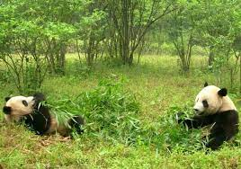

Habitad

Los pandas viven principalmente en bosques de bambú, en lo alto de las montañas del oeste de China, alimento del que subsisten casi por completo.
puede llegar a pesar hasta 150 kg
- los machos un 10% mayores y un 20% más pesados que las hembras
- Poseen un pelaje blanco con partes negras alrededor de los ojos
- Miden unos 150 cm de largo, más unos 10-15 cm de cola
- es un animal hervivoro
menú